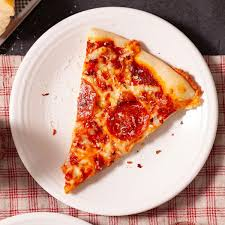

Pizza

Pizza is a popular Italian dish consisting of a usually round, flat base of leavened wheat-based dough topped with tomatoes, cheese, and often various other ingredients (such as anchovies, olives, meat, etc.), which is then baked at a high temperature, traditionally in a wood-fired oven.
Ingredients
- Pizza dough
- Tomato sauce
- Shredded mozzarella cheese
- Olive oil
- Fresh basil leaves
- Salt and pepper
- Your choice of toppings (pepperoni, mushrooms, bell peppers, etc.)
- Preheat your oven to 475°F (245°C).
- Roll out the pizza dough on a floured surface to your desired thickness.
- Transfer the rolled dough to a pizza stone or baking sheet.
- Spread a layer of tomato sauce evenly over the dough.
- Sprinkle shredded mozzarella cheese generously on top of the sauce.
- Add your choice of toppings, such as pepperoni, mushrooms, or bell peppers.
- Drizzle a little olive oil over the top and season with salt and pepper.
- Bake in the preheated oven for about 12-15 minutes, or until the crust is golden brown and the cheese is bubbly.
- Remove from the oven and let it cool for a few minutes before slicing.
- Garnish with fresh basil leaves if desired. Enjoy your homemade pizza!
Home